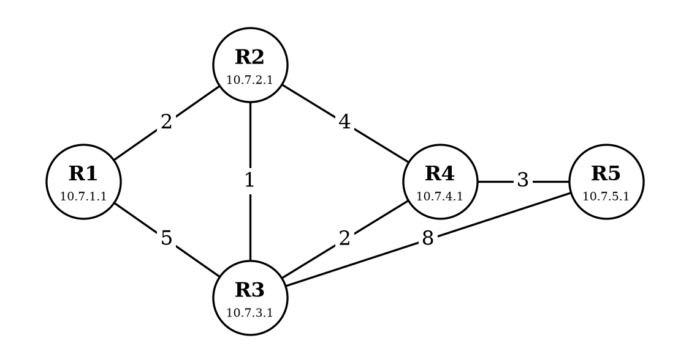
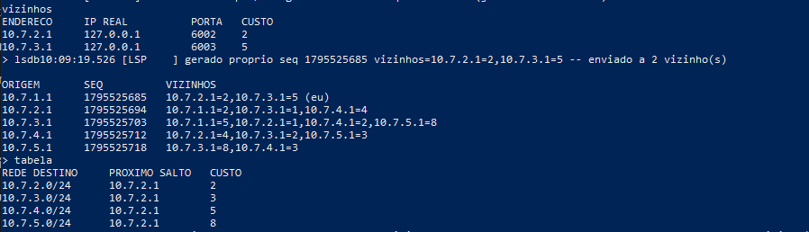
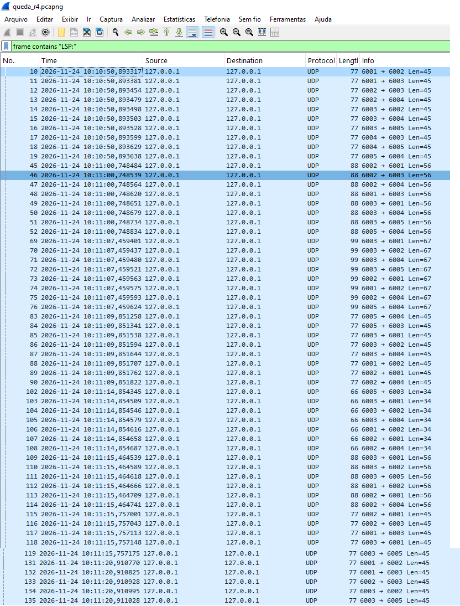
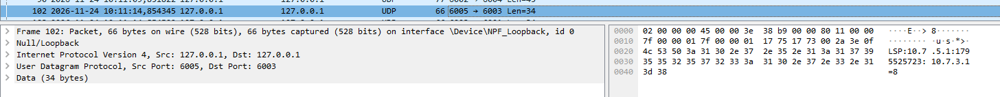
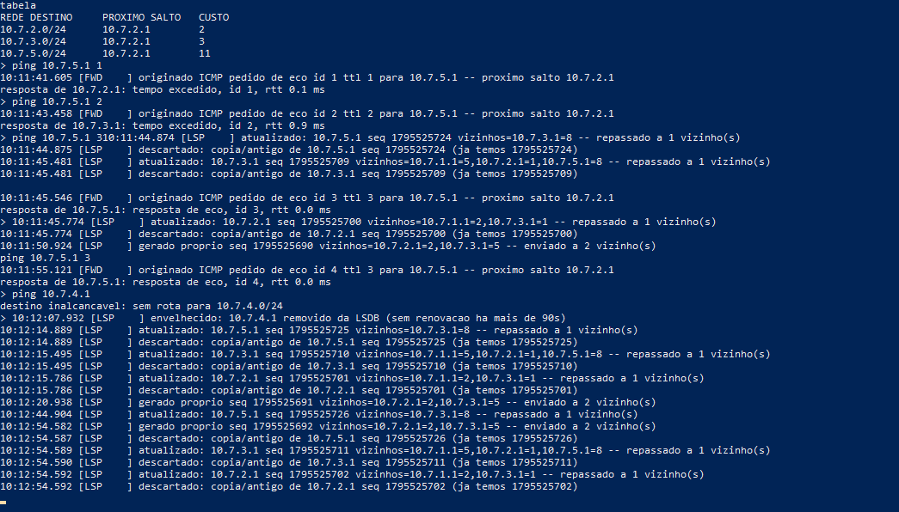
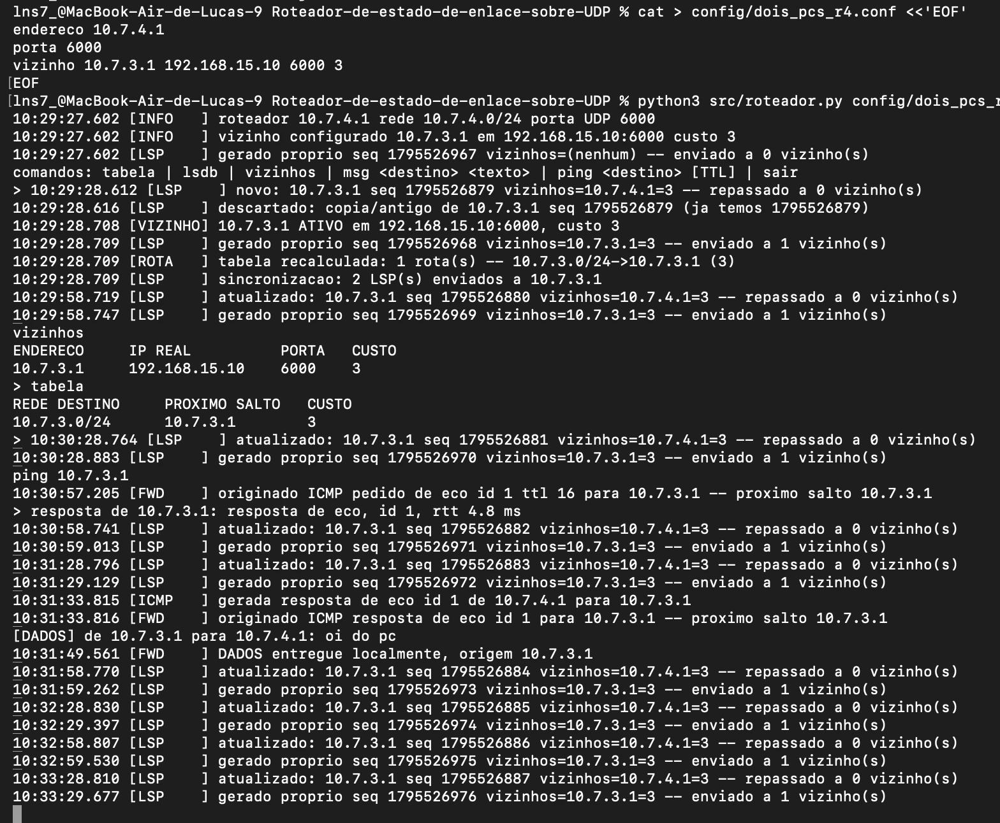

Fundamentos de Redes de Computadores
Grupo 7: Arthur Maciel (R1), Samuel Bitdinger (R2), Lucas Simao (R3) e Anthony Antonelli (R4)
O roteador foi implementado em Python 3 com sockets UDP, usando um único socket por roteador. O Dijkstra foi escrito pelo
grupo, usando apenas o heapq da biblioteca padrão.
Os experimentos das questões 1 a 3 foram feitos em uma única máquina (Windows 10), com cinco roteadores em 127.0.0.1, nas
portas 6001 a 6005 (arquivos config/teste/t1.conf a t5.conf). As capturas foram feitas com o
tshark, a versão de linha de comando do Wireshark, na interface de loopback, com o filtro
udp portrange 6001-6005. Também foi feito um teste em rede real com duas máquinas (seção 9).

| Enlace | R1–R2 | R1–R3 | R2–R3 | R2–R4 | R3–R4 | R4–R5 | R3–R5 |
|---|---|---|---|---|---|---|---|
| Custo | 2 | 5 | 1 | 4 | 2 | 3 | 8 |
Existem caminhos alternativos. Por exemplo, de R1 até R5: R1-R2-R3-R4-R5 (custo 8, o menor), R1-R2-R4-R5 (9), R1-R3-R4-R5 (10), R1-R2-R3-R5 (11) e R1-R3-R5 (13).
LSDB do R1, obtida pelo comando lsdb (Figura 2):
| Origem | Seq. | Vizinhos (custo) |
|---|---|---|
| 10.7.1.1 (R1) | 1795525685 | R2=2, R3=5 |
| 10.7.2.1 (R2) | 1795525694 | R1=2, R3=1, R4=4 |
| 10.7.3.1 (R3) | 1795525703 | R1=5, R2=1, R4=2, R5=8 |
| 10.7.4.1 (R4) | 1795525712 | R2=4, R3=2, R5=3 |
| 10.7.5.1 (R5) | 1795525718 | R3=8, R4=3 |
Execução do algoritmo a partir do R1. N' é o conjunto de nós já definidos; D(v) é o custo do melhor caminho conhecido até v, e p(v) é o predecessor. O valor marcado com * se torna definitivo naquele passo.
| Passo | N' | D(R2), p | D(R3), p | D(R4), p | D(R5), p |
|---|---|---|---|---|---|
| 0 | R1 | 2, R1 | 5, R1 | ∞ | ∞ |
| 1 | R1, R2 | 2, R1 * | 3, R2 | 6, R2 | ∞ |
| 2 | R1, R2, R3 | 3, R2 * | 5, R3 | 11, R3 | |
| 3 | R1, R2, R3, R4 | 5, R3 * | 8, R4 | ||
| 4 | R1, R2, R3, R4, R5 | 8, R4 * |
Seguindo os predecessores, os caminhos são: R2 por R1→R2; R3 por R1→R2→R3; R4 por R1→R2→R3→R4; e R5 por R1→R2→R3→R4→R5.
Todos começam pelo R2. A comparação com a tabela exibida pelo programa (comando tabela, Figura 2) mostra que
os resultados são iguais:
| Rede de destino | Próximo salto | Custo calculado | Custo no programa |
|---|---|---|---|
| 10.7.2.0/24 | 10.7.2.1 | 2 | 2 |
| 10.7.3.0/24 | 10.7.2.1 | 3 | 3 |
| 10.7.4.0/24 | 10.7.2.1 | 5 | 5 |
| 10.7.5.0/24 | 10.7.2.1 | 8 | 8 |

vizinhos, lsdb e tabela no R1.Foram feitas duas capturas, cada uma derrubando um roteador. O roteador foi encerrado com sair, que apenas
fecha o socket sem avisar os vizinhos, o que equivale a uma queda. Foram contados os pacotes LSP desde a primeira detecção da
queda até o último vizinho atualizar seu LSP. As renovações periódicas de 30 s fora desse intervalo não foram contadas. Os
descartes foram contados nos logs, nas linhas descartado: copia/antigo. Os pacotes estão listados nos
Apêndices A e B.
| Queda do R3 | Queda do R4 | |
|---|---|---|
| Arquivo | queda_r3.pcapng | queda_r4.pcapng |
| Intervalo analisado | 09:57:09.02 – 09:57:09.70 | 10:11:14.85 – 10:11:15.76 |
| Roteadores restantes | R1, R2, R4, R5 (sem ciclo) | R1, R2, R3, R5 (com ciclo R1-R2-R3) |
| LSPs novos gerados | 4 | 3 |
| Pacotes LSP no intervalo | 18 | 18 |
| Enviados ao roteador que caiu | 6 | 3 |
| Recebidos e aceitos | 12 | 9 |
| Recebidos e descartados como cópia | 0 | 6 |
Análise. Cada roteador que detecta a queda gera um único LSP novo. Cada roteador repassa esse LSP uma só vez, a todos os vizinhos ativos menos o que o enviou. Na queda do R3, os roteadores restantes formam uma linha, então cada LSP passa uma vez por cada enlace e não há cópias. Na queda do R4 sobra o ciclo R1-R2-R3: o mesmo LSP chega por dois caminhos, e a segunda chegada tem número de sequência igual ao já armazenado, por isso é descartada. Os pacotes enviados ao roteador que caiu existem porque os vizinhos só o consideram inativo depois de 20 s sem HELLO.
As Figuras 3 e 4 mostram a captura da queda do R4 no Wireshark, com o filtro frame contains "LSP:". Os
quadros 102 a 119 são os LSPs gerados pela queda. Os demais (10 a 90 e 131 a 135) são renovações periódicas de 30 s.
O roteador de cada pacote é identificado pela porta: R1 = 6001, R2 = 6002, R3 = 6003, R4 = 6004 e R5 = 6005.

queda_r4.pcapng no Wireshark.
LSP:10.7.5.1:1795525723:10.7.3.1=8, gerado quando o R5 detectou a queda do R4.Comparação com vetor distância (análise teórica, sem medição). No vetor distância, cada roteador envia aos vizinhos a sua tabela inteira de distâncias, e não só os enlaces diretos. Depois de uma queda, a informação se propaga em rodadas: um roteador recalcula e anuncia, o vizinho recalcula e anuncia de novo, e cada rodada gera mensagens novas. Com caminhos alternativos pode acontecer a contagem até o infinito, que aumenta muito o número de mensagens e o tempo de convergência. No estado de enlace, só quem detectou a queda gera mensagem, e cada LSP é repassado no máximo uma vez por roteador.
Nos dois experimentos, o roteador derrubado estava no menor caminho de R1 até R5 (R1-R2-R3-R4-R5). Depois da queda, o R1 passou a usar um caminho alternativo: custo 9 sem o R3, e custo 11 sem o R4.
| Evento | Queda do R3 | Queda do R4 |
|---|---|---|
| Último HELLO enviado pelo roteador (captura) | 09:56:48.975 | 10:10:54.765 |
Comando sair (log) | 09:56:53.365 | 10:10:55.451 |
| Primeiro vizinho detecta a queda | 09:57:09.023 | 10:11:14.853 |
| Último vizinho detecta a queda | 09:57:09.695 | 10:11:15.756 |
| Tabela do R1 recalculada pela última vez | 09:57:09.696 | 10:11:15.757 |
| Tempo | Queda do R3 | Queda do R4 |
|---|---|---|
Detecção (do sair à primeira detecção) | 15,7 s | 19,4 s |
| Inundação e recálculo (da primeira detecção à tabela final do R1) | 0,67 s | 0,90 s |
| Total | 16,3 s | 20,3 s |
Relação com os temporizadores. O HELLO é enviado a cada 5 s, e o vizinho é considerado inativo depois de 20 s sem HELLO. Contando a partir do último HELLO enviado, a detecção levou 20,05 s e 20,09 s, ou seja, o próprio timeout. Contando a partir da queda, o tempo fica entre 15 s e 20 s, dependendo de quanto tempo antes da queda saiu o último HELLO: 4,4 s antes no primeiro experimento e 0,7 s antes no segundo. Quase todo o tempo de convergência é detecção. A inundação e o recálculo levaram menos de 1 s.
Quando o R3 foi reiniciado (09:59:21.446), o R1 o viu ativo em 09:59:22.449 e voltou à tabela original em 09:59:24.604, 3,2 s depois. Isso acontece por causa da sincronização da LSDB com o vizinho novo.
O número de sequência indica qual é o LSP mais recente de cada origem. O roteador só aceita e repassa um LSP com número maior que o armazenado; se for igual ou menor, descarta. Isso tem duas funções:
Se um roteador reiniciado voltasse a numerar a partir de 0, os outros roteadores ainda teriam o LSP antigo dele, com um
número maior. Os LSPs novos seriam descartados como antigos, e a rede continuaria usando a topologia antiga desse roteador
até o LSP antigo envelhecer (90 s sem renovação). Durante esse tempo as rotas para ele poderiam estar erradas. A especificação
evita isso usando o horário atual (Unix time) como primeiro número. No experimento, o último LSP do R3 antes da queda tinha
número 1795524735 (quadro 16 de queda_r3.pcapng). Depois de reiniciar, o primeiro LSP do R3 teve número
1795525161 (log do R3), que é maior, e por isso foi aceito na hora.
Se um LSP for perdido, o roteador que não o recebeu fica com a LSDB desatualizada e pode calcular rotas erradas por algum tempo. Não há confirmação nem retransmissão.
O mecanismo que recupera a LSDB é a renovação periódica: cada roteador gera um novo LSP a cada 30 s, mesmo sem mudança, então qualquer perda é corrigida em até 30 s. Na Figura 6, o R4 recebe a renovação do R3 a cada 30 s, com o número de sequência aumentando de 1 em 1. Além disso, o envelhecimento é de 90 s, ou 3 renovações, então perder uma ou duas renovações não tira o roteador da LSDB. A sincronização com novo vizinho e os caminhos redundantes da inundação também ajudam.
Os roteadores calculam as rotas sobre a mesma topologia só depois que a rede converge. Durante a convergência, cada um recebe os LSPs em um momento diferente, e por um tempo eles têm tabelas diferentes entre si. Isso foi observado na queda do R4: o R1 teve a rota para 10.7.4.0/24 com custo 5, depois 6, e depois nenhuma rota; o R5 teve custo 10, depois 13, e depois nenhuma rota.
Exemplo de laço (situação hipotética na topologia de teste). Suponha que o enlace R3–R4 caia, com os dois roteadores ainda ligados. Antes da queda, o R2 chega ao R4 por R2→R3→R4 (custo 3). O R3 detecta a queda primeiro e passa a chegar ao R4 por R3→R2→R4 (custo 5). Enquanto o LSP novo do R3 não chega ao R2, o R2 continua mandando para o R3 os pacotes destinados ao R4. O R3 devolve esses pacotes ao R2, e eles ficam indo e voltando entre os dois. O TTL é decrementado a cada salto, então o pacote é descartado depois de no máximo 16 saltos, e o roteador que o descartou envia um ICMP tempo excedido para a origem.
Queda do R4, vista no R1 (Figura 5). A tabela do R1 ficou com 10.7.2.0/24 (custo 2), 10.7.3.0/24 (3) e
10.7.5.0/24 (11), todas pelo próximo salto 10.7.2.1. O ping 10.7.5.1 com TTL 1, 2 e 3 recebeu tempo excedido de
10.7.2.1, tempo excedido de 10.7.3.1 e resposta de eco de 10.7.5.1. O ping 10.7.4.1 retornou destino
inalcançável. Depois, o LSP do R4 foi removido da LSDB por envelhecimento (10:12:07.932).

Rede real com duas máquinas. O R3 rodou em um PC com Windows (192.168.15.10) e o R4 em um MacBook (192.168.15.4),
porta 6000, com enlace de custo 3 (arquivos config/dois_pcs_r3.conf e dois_pcs_r4.conf). Os dois se
detectaram como vizinhos, trocaram LSPs, o ping teve resposta (RTT de 4,8 ms) e a msg enviada do PC
apareceu no Mac.

Fonte: capturas/queda_r3.pcapng.
| Quadro | Hora | Envio | LSP de | Seq. | Vizinhos no LSP | Situação |
|---|---|---|---|---|---|---|
| 108 | 09:57:09.023 | R1 → R2 | 10.7.1.1 | 1795524702 | 10.7.2.1=2 | entregue |
| 109 | 09:57:09.024 | R2 → R3 | 10.7.1.1 | 1795524702 | 10.7.2.1=2 | enviado ao roteador que caiu |
| 110 | 09:57:09.024 | R2 → R4 | 10.7.1.1 | 1795524702 | 10.7.2.1=2 | entregue |
| 111 | 09:57:09.024 | R4 → R3 | 10.7.1.1 | 1795524702 | 10.7.2.1=2 | enviado ao roteador que caiu |
| 112 | 09:57:09.024 | R4 → R5 | 10.7.1.1 | 1795524702 | 10.7.2.1=2 | entregue |
| 113 | 09:57:09.024 | R5 → R3 | 10.7.1.1 | 1795524702 | 10.7.2.1=2 | enviado ao roteador que caiu |
| 114 | 09:57:09.242 | R5 → R4 | 10.7.5.1 | 1795524743 | 10.7.4.1=3 | entregue |
| 115 | 09:57:09.242 | R4 → R2 | 10.7.5.1 | 1795524743 | 10.7.4.1=3 | entregue |
| 116 | 09:57:09.242 | R4 → R3 | 10.7.5.1 | 1795524743 | 10.7.4.1=3 | enviado ao roteador que caiu |
| 117 | 09:57:09.242 | R2 → R1 | 10.7.5.1 | 1795524743 | 10.7.4.1=3 | entregue |
| 118 | 09:57:09.242 | R2 → R3 | 10.7.5.1 | 1795524743 | 10.7.4.1=3 | enviado ao roteador que caiu |
| 122 | 09:57:09.498 | R2 → R1 | 10.7.2.1 | 1795524732 | 10.7.1.1=2, 10.7.4.1=4 | entregue |
| 123 | 09:57:09.498 | R2 → R4 | 10.7.2.1 | 1795524732 | 10.7.1.1=2, 10.7.4.1=4 | entregue |
| 124 | 09:57:09.498 | R4 → R3 | 10.7.2.1 | 1795524732 | 10.7.1.1=2, 10.7.4.1=4 | enviado ao roteador que caiu |
| 125 | 09:57:09.498 | R4 → R5 | 10.7.2.1 | 1795524732 | 10.7.1.1=2, 10.7.4.1=4 | entregue |
| 126 | 09:57:09.695 | R4 → R2 | 10.7.4.1 | 1795524739 | 10.7.2.1=4, 10.7.5.1=3 | entregue |
| 127 | 09:57:09.695 | R4 → R5 | 10.7.4.1 | 1795524739 | 10.7.2.1=4, 10.7.5.1=3 | entregue |
| 128 | 09:57:09.695 | R2 → R1 | 10.7.4.1 | 1795524739 | 10.7.2.1=4, 10.7.5.1=3 | entregue |
Fonte: capturas/queda_r4.pcapng.
| Quadro | Hora | Envio | LSP de | Seq. | Vizinhos no LSP | Situação |
|---|---|---|---|---|---|---|
| 102 | 10:11:14.854 | R5 → R3 | 10.7.5.1 | 1795525723 | 10.7.3.1=8 | entregue |
| 103 | 10:11:14.854 | R3 → R1 | 10.7.5.1 | 1795525723 | 10.7.3.1=8 | entregue |
| 104 | 10:11:14.854 | R3 → R2 | 10.7.5.1 | 1795525723 | 10.7.3.1=8 | entregue |
| 105 | 10:11:14.854 | R3 → R4 | 10.7.5.1 | 1795525723 | 10.7.3.1=8 | enviado ao roteador que caiu |
| 106 | 10:11:14.854 | R1 → R2 | 10.7.5.1 | 1795525723 | 10.7.3.1=8 | entregue |
| 107 | 10:11:14.854 | R2 → R1 | 10.7.5.1 | 1795525723 | 10.7.3.1=8 | entregue |
| 108 | 10:11:14.854 | R2 → R4 | 10.7.5.1 | 1795525723 | 10.7.3.1=8 | enviado ao roteador que caiu |
| 109 | 10:11:15.464 | R3 → R1 | 10.7.3.1 | 1795525708 | 10.7.1.1=5, 10.7.2.1=1, 10.7.5.1=8 | entregue |
| 110 | 10:11:15.464 | R3 → R2 | 10.7.3.1 | 1795525708 | 10.7.1.1=5, 10.7.2.1=1, 10.7.5.1=8 | entregue |
| 111 | 10:11:15.464 | R3 → R5 | 10.7.3.1 | 1795525708 | 10.7.1.1=5, 10.7.2.1=1, 10.7.5.1=8 | entregue |
| 112 | 10:11:15.464 | R1 → R2 | 10.7.3.1 | 1795525708 | 10.7.1.1=5, 10.7.2.1=1, 10.7.5.1=8 | entregue |
| 113 | 10:11:15.464 | R2 → R1 | 10.7.3.1 | 1795525708 | 10.7.1.1=5, 10.7.2.1=1, 10.7.5.1=8 | entregue |
| 114 | 10:11:15.464 | R2 → R4 | 10.7.3.1 | 1795525708 | 10.7.1.1=5, 10.7.2.1=1, 10.7.5.1=8 | enviado ao roteador que caiu |
| 115 | 10:11:15.757 | R2 → R1 | 10.7.2.1 | 1795525699 | 10.7.1.1=2, 10.7.3.1=1 | entregue |
| 116 | 10:11:15.757 | R2 → R3 | 10.7.2.1 | 1795525699 | 10.7.1.1=2, 10.7.3.1=1 | entregue |
| 117 | 10:11:15.757 | R1 → R3 | 10.7.2.1 | 1795525699 | 10.7.1.1=2, 10.7.3.1=1 | entregue |
| 118 | 10:11:15.757 | R3 → R1 | 10.7.2.1 | 1795525699 | 10.7.1.1=2, 10.7.3.1=1 | entregue |
| 119 | 10:11:15.757 | R3 → R5 | 10.7.2.1 | 1795525699 | 10.7.1.1=2, 10.7.3.1=1 | entregue |